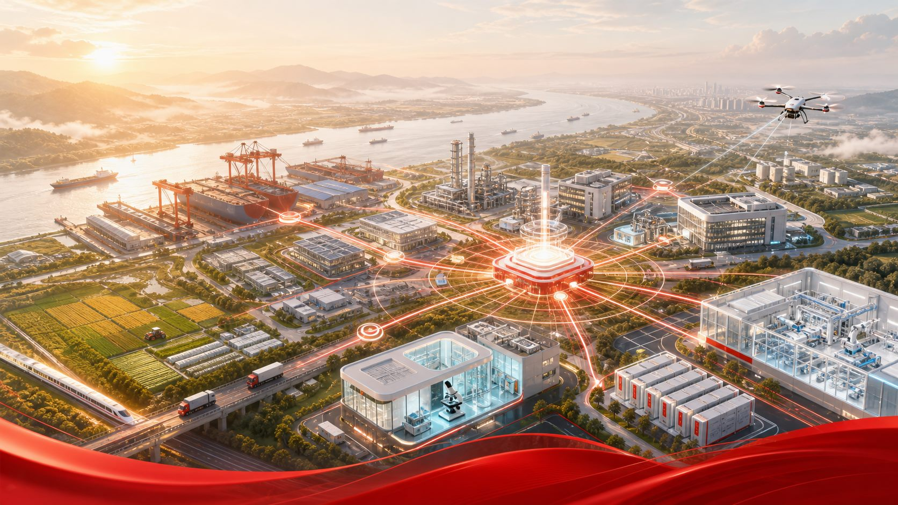
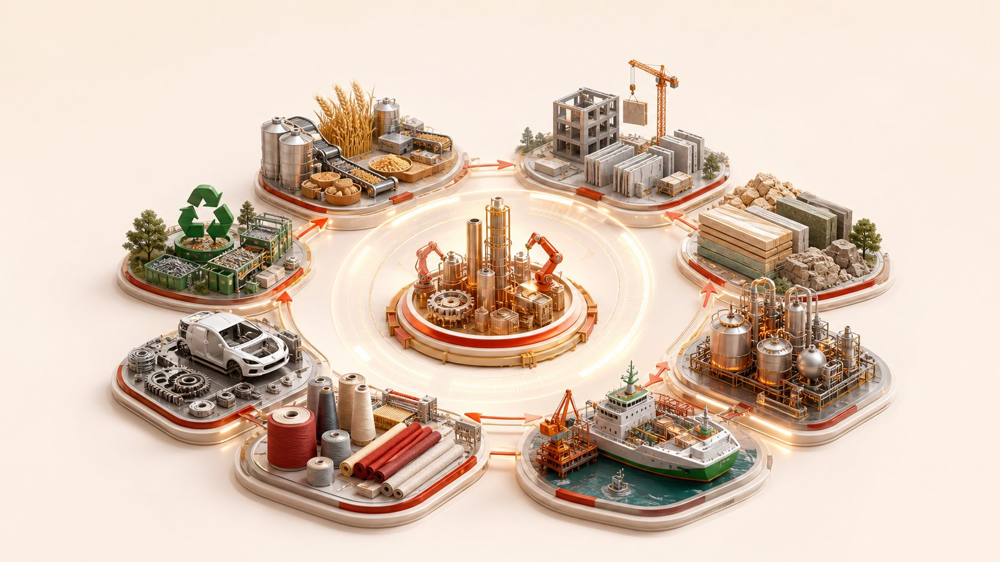
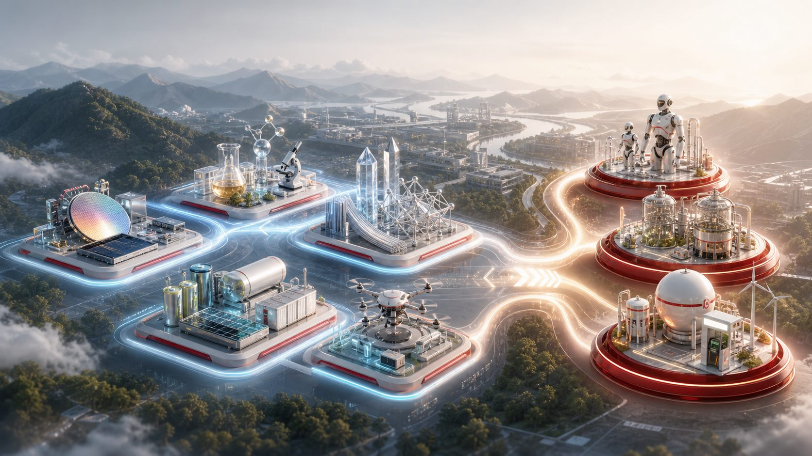
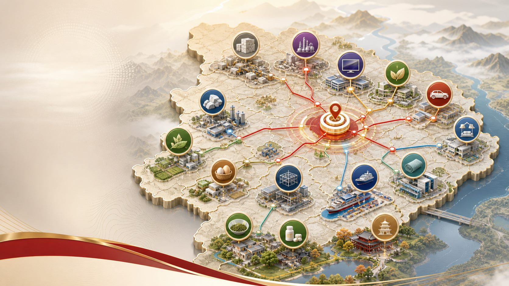

改造提升传统产业
设备更新、工艺升级、数智赋能，推动绿色转型和高端提质。
这一章的主线，是把实体经济作为发展着力点，沿着智能化、绿色化、融合化方向，把传统产业、新兴产业、未来产业、现代服务业、产业集群和品牌体系串成一套完整的产业升级方案。

第二章不是简单罗列产业门类，而是从“存量焕新”走向“增量培育”，再通过服务业、集群和品牌把产业能力组织起来。
设备更新、工艺升级、数智赋能，推动绿色转型和高端提质。
光电子信息、生命健康、新材料、新能源、低空经济成为新支柱。
具身智能、生物制造、氢能作为新的经济增长点。
生产性服务业支撑集群，生活性服务业带动消费升级。
链长、链主、链创融合，形成县域特色产业集群。
从黄冈产品走向黄冈品牌，形成区域、企业、产业、产品矩阵。
规划把农产品加工、建筑、建材、化工、船舶、纺织服装、汽车零部件、再生资源八类产业作为传统产业焕新的重点。

从零散初加工走向规模化、现代化精深加工，覆盖粮油、水产、中药材、茶叶、畜禽、蛋品、预制菜、饲料、食品饮料。
抢占数字设计、智能装备、装配式装修、智能家居新赛道，打造“黄冈建造”品牌。
石材、钢结构、新型建材、饰面材料共同转向高端化、智能化、绿色化。
传统化工向现代化工、精细化工转型，打造磷氟化工特色产业集群。
依托长江岸线，构建“一核两区多点全域”的绿色智能船舶产业体系。
补齐化纤、印染、成衣制造等关键环节，推动高端化、智能化、绿色化、集群化。
从基础件向精密件跃升，从传统部件向新能源、智能网联部件转型。
构建“回收—拆解—分拣—冶炼—精深加工”全链条体系。
新兴产业强调提质扩量和场景示范，未来产业强调技术产业化落地与现有产业未来化跃升。

融入武汉光电子信息产业集群，主攻电子化学品、新型显示材料、光通信材料。
对接光谷生物城，推动原料药向制剂、器械、健康用品延伸。
高端金属、新型无机非金属、先进高分子、复合材料协同跃升。
新型储能、非电利用、智慧能源、电算协同把资源优势转成产业优势。
通用机场、起降场、低空智能网联平台和“低空+”应用共同推进。
到“十五五”末，服务业增加值占 GDP 比重超过 55%。这一节同时面向生产端、生活端和产业融合端。
以服务业扩能提质行动，构建优质高效服务业体系。
现代物流、科技服务、商务服务、信息服务、现代金融、节能环保向专业化和价值链高端延伸。
健康服务、现代商贸、文旅体育、家庭服务、养老服务推动高品质、多样化、便利化。
工业设计、检验检测、认证认可、工业互联网、人工智能大模型等嵌入制造环节，推动企业从生产制造型向生产服务型转变。
农业服务向加工技术、品牌建设、营销策划、农村金融及产业链中后端延伸，推动“从田间到餐桌”全链条提档升级。
产业集群是第二章的组织方式：链群布局、龙头企业、产业生态共同提升产业链韧性与集群竞争力。

麻城石材、武穴磷氟化工产业集群。
光电子信息、生命健康、汽车零部件、泛家居、鄂东纺织服装。
绿色智能船舶、团风钢构、浠水鸡蛋、蕲春蕲艾、钙基材料、光通信材料、医药化工、英山茶叶等。
品牌强市建设把产业、产品、区域形象和质量基础设施串起来，形成可识别、可评价、可保护的品牌体系。
以“大美黄冈·此心安处”为核心，打造东坡庙会、黄冈教育、红色文旅、中医药等全国知名品牌。
重点发展“蕲艾”“英山云雾茶”两大省级区域公用品牌，培育“一县一品、一县多品”。
围绕大健康、现代化工、绿色建材、智能制造、农产品加工等集群培育领军企业品牌。
提升核心产品品牌化、规模化供给，形成市场认可度高的创新产品和品牌标杆。
标准建设、质量强基、检验检测、品牌价值评价、商标地标培育、品牌运营升级和品牌保护共同支撑品牌强市。